اكتشاف تلقائي
تُفعَّل حين تبلغ نسبة العربية عتبة تضبطها أنت (افتراضي 15٪).
مواقع كثيرة تعرض العربية مقلوبة أو محاذاة لليسار: الكلمات تتفكك، الأرقام تقفز، والكود ينعكس مع النص. الإضافات التي تقلب الصفحة كلها بـ direction: rtl على body تُصلح سطراً وتكسر الشريط الجانبي وزر الإرسال وكتل الكود. Fluent Arabic Web تكتشف النص العربي داخل الصفحة وتصحّح اتجاهه فقط — والتخطيط يبقى كما صمّمه الموقع.

لاحظ موضع علامات التنصيص والأقواس في فقرة عربية تبدأ بمصطلح إنجليزي — وهي الحالة التي تنتج عنها أكثر الأخطاء شيوعاً في المحاذاة التلقائية.

الأقواس وعلامات التنصيص تتقدّم أو تتأخّر، فينكسر إيقاع الجملة ويصعب تتبّعها.

النص نفسه بعد عزل الاتجاه: العربية يمين، والرموز والأرقام والكود في موضعها الطبيعي.
تُفعَّل حين تبلغ نسبة العربية عتبة تضبطها أنت (افتراضي 15٪).
العربية يمين، والإنجليزية والأرقام والكود تبقى على حالها داخل نفس الفقرة.
لا قلب لـ flex/grid ولا لشريط الأدوات.
ChatGPT وClaude وGrok وAI Studio وHarness وغيرها — CSS يصمد أمام إعادة رسم React.
اضغط على النص المعوج في الصفحة؛ الإضافة تحفظ محدداً مستقراً لهذا الموقع.
يخبرك لماذا لم تُصحَّح الصفحة: عتبة، غياب profile، أو حجب السكربت.
تعمل داخل المكوّنات الحديثة والإطارات المضمّنة.
تسعة خطوط، منها ثمانية تايبفيس وخطوط عام الشعر والجمل والحرف.
سماح أو تجاهل بنطاق مثل *.example.com، وAlt + Shift + A لتفعيل الصفحة الحالية أو إيقافها.
هذه المواقع لا يكفي معها الكشف العام (تعيد رسم الصفحة أو تبثّ النص حياً). لها قواعد مخصّصة، مع إبقاء pre وcode وKaTeX باتجاه LTR.
يعمل بالكشف العام: تُقاس نسبة العربية في الصفحة، ويُصحَّح النص حين تتجاوز العتبة — بلا حاجة إلى ملف موقع.


تُطبَّق على النصوص العربية فقط، لا على واجهة الموقع.
سياسة الخصوصية الكاملة — تفصيل ما يُحفظ على جهازك، وسبب كل صلاحية، وما لا تفعله الإضافة.
لا يوجد في ملفات الإضافة (content.js وbackground.js وlib/) أي نداء شبكة إطلاقاً: لا fetch ولا XMLHttpRequest ولا WebSocket.
الأمر أعلاه لا يُخرج شيئاً — ويمكنك تشغيله على نسخة المستودع.
تعمل على Chrome وEdge (وأي متصفح مبني على Chromium يدعم إضافات Chrome).
افتح طبيب الموقع. إن كانت نسبة العربي تحت العتبة خفّف الحساسية، أو أضف النطاق للمسموح، أو التقط العنصر.
أضف المحدد في وضع استثناء LTR، أو تأكد أن الملف الجاهز يستثني pre/code. لا تستخدم فرض RTL على الصفحة كلها.
لا. التصحيح يقع على النص نفسه عبر عزل الاتجاه، ولا يُفرض direction: rtl على حاويات الصفحة أو body؛ فالقوائم الجانبية وأزرار الإرسال وكتل الكود تبقى كما صمّمها الموقع.
لها ملفات جاهزة في 4.3. إن كسر تحديث الواجهة شيئاً: التقاط عنصر على الصندوق أو فقرة الرد.
Harness يُطابق 127.0.0.1 وlocalhost. القواعد لا تُطبَّق إلا بوجود سمات الواجهة الخاصة به.
لا. لا يوجد أي نداء شبكة في شيفرة الإضافة، وكل المعالجة تجري داخل المتصفح، والإعدادات تبقى في تخزين المتصفح على جهازك.
جافاسكربت خالص بلا مكتبات تشغيل، مع اختبارات آلية تعمل على ويندوز ولينكس وماك بـ Node 22 و24.
يتطلب Node >= 22.22.2 (شرط مكتبة jsdom المستخدمة في الاختبارات).
A Manifest V3 extension that detects Arabic on a page and fixes its direction without flipping the layout.
Sidebars, composers, and code blocks stay intact; English, numbers, and pre/code/KaTeX remain LTR inside mixed paragraphs.
Install from the Chrome Web Store, or read the source on GitHub. MIT licensed, no accounts, no telemetry, no network calls.